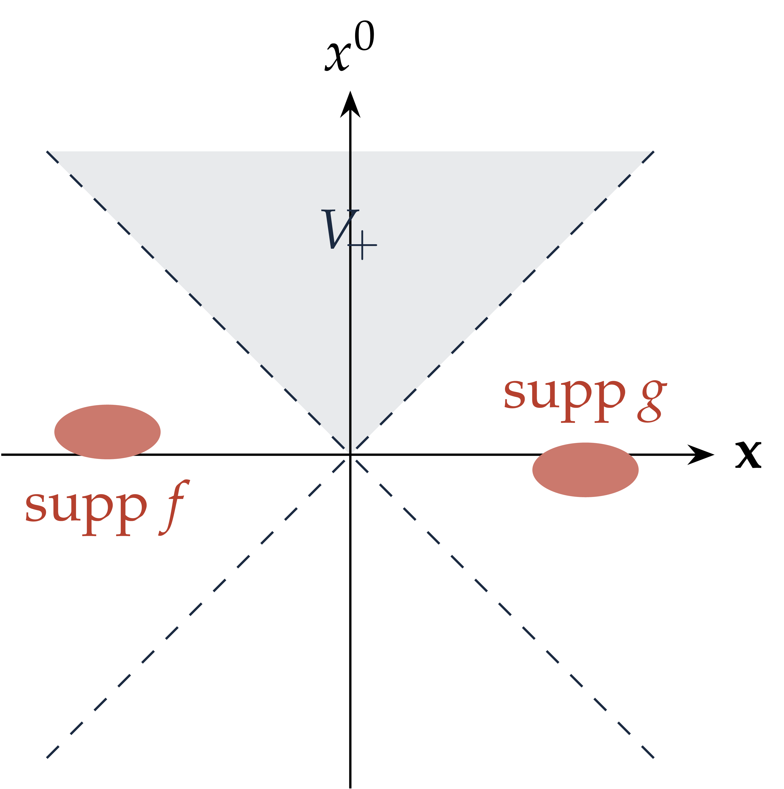
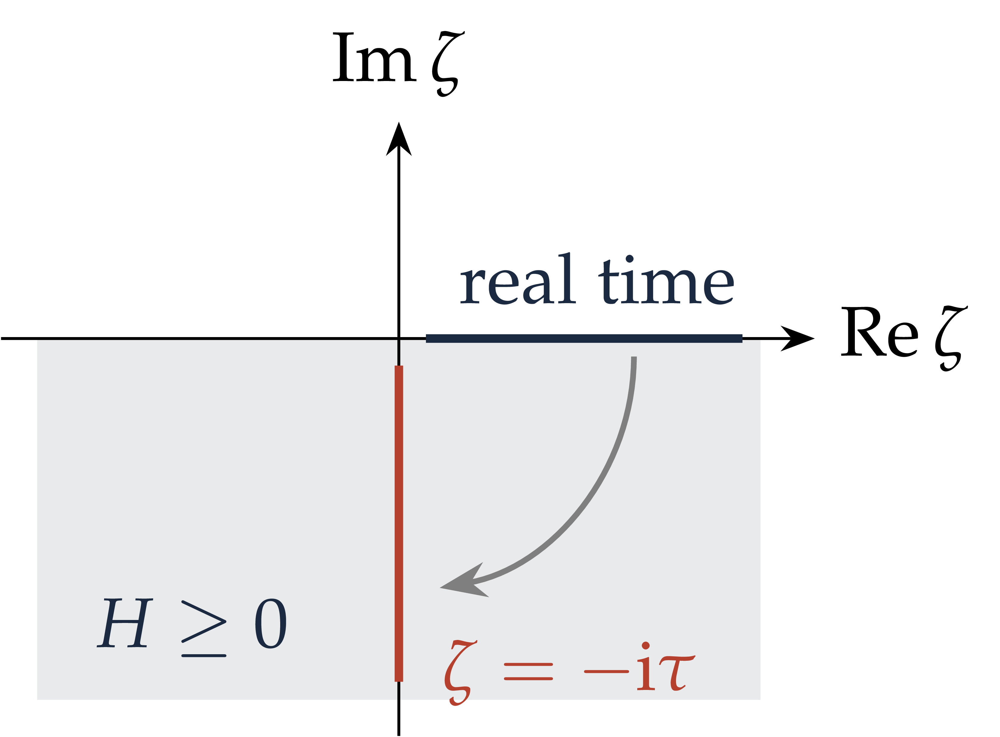
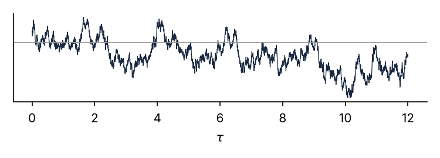
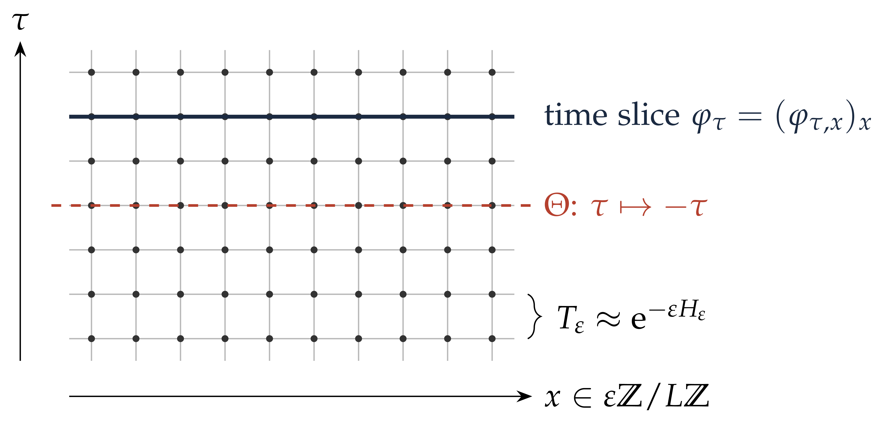

A Constructive Introduction to Quantum Field Theory
Relativistic quantum fields and imaginary time
Massimiliano Gubinelli | University of Oxford
SISSA lectures, Lecture 1 — notes: Lecture 1, §§1–2
Goal: construct, with full rigour, interacting relativistic quantum fields, i.e. models satisfying axioms encoding quantum mechanics, special relativity and causality.
Status:
\(d = 2\): \(P (\varphi)_2\), Yukawa\(2\), sine-Gordon, …
\(d = 3\): \(\Phi^4_3\), …
\(d = 4\): no interacting example; critical lattice \(\varphi^4_4\) has Gaussian scaling limits (Aizenman–Duminil-Copin 2021).
Lesson of the late 1960s–70s: work in imaginary time. A QFT becomes a probability measure on \(\mathcal{S}' (\mathbb{R}^d)\), which looks like the continuum limit of a classical spin system at a critical point.
Modern tools (this course): stochastic quantisation, singular SPDEs, variational methods; RG and cluster expansions as complements.
Part I. Minkowski picture
|
Part II. Imaginary time
|
Conventions: \(\hbar = c = 1\), spacetime dimension \(d = 1 + s\), \(\langle f, g \rangle = \int \bar{f} g\), \(\hat{f} (k) = \int \mathrm{e}^{- \mathrm{i} k \cdot x} f (x) \mathrm{d} x\).
Relativistic quantum fields
Lecture 1
|
 |
(W0) Relativistic quantum theory
Separable Hilbert space \(\mathcal{H}\);
strongly continuous unitary representation \(U\)
of \(\mathcal{P}^{\uparrow}_+\); \(U
(a, \mathbb{1}) = \mathrm{e}^{\mathrm{i} P \cdot a}\), \(H = P^0\).
Spectrum condition: \(\text{spec} (P) \subset \bar{V}_{\hspace{-0.17em}
+}\), so \(H \geq | \textbf{P} | \geq
0\).
Vacuum: unique (up to phase) unit vector
\(\Omega\) with \(U (a, \mathbb{1})
\Omega = \Omega\).
(W1) Fields
Dense \(\mathcal{D} \ni \Omega\); for \(f \in \mathcal{S} (\mathbb{R}^d)\) an operator \(\varphi (f)\) on \(\mathcal{D}\), \(\varphi (f) \mathcal{D} \subset \mathcal{D}\), \(U\mathcal{D} \subset \mathcal{D}\); \(f \mapsto \langle \chi, \varphi (f) \psi \rangle\) tempered; \(\langle \chi, \varphi (f) \psi \rangle = \langle \varphi (\bar{f}) \chi, \psi \rangle\).
(W2) Covariance, (W3) Locality, (W4) Cyclicity
\(U (a, \Lambda) \varphi (f) U (a, \Lambda)^{- 1} = \varphi (f \circ (a, \Lambda)^{- 1})\);\([\varphi (f), \varphi (g)] = 0\) if supports are spacelike separated;polynomials in \(\varphi\) applied to \(\Omega\) are dense.
Formally \(\varphi (f) = \int \varphi (x) f (x) \mathrm{d} x\), \(\varphi (x^0, \textbf{x}) = \mathrm{e}^{\mathrm{i} Hx^0} \varphi (0, \textbf{x}) \mathrm{e}^{- \mathrm{i} Hx^0}\).
Wightman functions \(W_n (f_1, \ldots, f_n) = \langle \Omega, \varphi (f_1) \cdots \varphi (f_n) \Omega \rangle \in \mathcal{S}' (\mathbb{R}^{dn})\):
positivity \(\sum_{j, k} W_{j + k} (g_j^{\ast} \otimes g_k) \geq 0\);Poincaré invariance;
spectral condition: Fourier support in \(\bar{V}_{\hspace{-0.17em} +}^{\hspace{0.17em} n - 1}\) (difference variables);
locality; cluster property \(\Leftrightarrow\) unique vacuum.
Theorem.
To construct a QFT it suffices to construct its Wightman functions.
Difficulty: positivity involves all \(W_n\) at once and refers to real time, while what we can construct lives in imaginary time.
The Euclidean approach replaces it by reflection positivity, checkable on lattice approximations and stable under limits.
The axioms say nothing about dynamics: no Lagrangian; the interaction is hidden in the higher \(W_n\).
\(\omega (\textbf{p}) = (| \textbf{p} |^2 + m^2)^{1 / 2}\),\(\mathrm{d} \Omega_m (\textbf{p}) = \dfrac{\mathrm{d} \textbf{p}}{(2 \pi)^s \hspace{0.17em} 2 \omega (\textbf{p})}\) (invariant measure on \(H_m^+ = \{p^2 = m^2, p^0 > 0\}\)), Fock space over \(L^2 (\mathrm{d} \Omega_m)\):
with \([a (\textbf{p}), a^{\ast} (\textbf{q})] = (2 \pi)^s 2 \omega (\textbf{p}) \hspace{0.17em} \delta (\textbf{p} - \textbf{q})\), \(a (\textbf{p}) \Omega = 0\). Then
but
UV divergence: logarithmic for \(s = 1\), power-like for \(s \geq 2\). Not an artefact of the free field.
Proposition.
Lemma. For \(d \geq 2\), a finite \(\mathcal{L}^{\uparrow}_+\)-invariant measure on \(\bar{V}_{\hspace{-0.17em} +}\) is \(c \hspace{0.17em} \delta_0\).
Combined with locality and Reeh–Schlieder: \(\varphi\) is a multiple of \(\mathbb{1}\).
Quantum fields are operator-valued distributions: nonlinear expressions in \(\varphi (x)\) need a definition \(\Rightarrow\) renormalisation.
Lemma. A boost of rapidity \(\theta\) acts as \(p^0 \pm p^1 \mapsto \mathrm{e}^{\pm \theta} (p^0 \pm p^1)\). The sets
are mapped to each other by the boost with \(\mathrm{e}^{\theta} = 2\); they are disjoint and cover \(\bar{V}_{\hspace{-0.17em} +} \setminus \{0\}\). Invariance and finiteness force \(\mu (S^{\pm}_j) = 0\).
Proposition.
Covariance gives \(\int f (x) U (\Lambda x) (U (0, \Lambda) \psi - \psi) \mathrm{d} x = 0\) for all \(f\), so \(U (0, \Lambda) \psi = \psi\).
The spectral measure \(\mu\) of \(\psi\) for translations is finite, supported in \(\bar{V}_{\hspace{-0.17em} +}\) and Lorentz invariant, so \(\mu = \| \psi \|^2 \delta_0\).
Hence \(U (a) \psi = \psi\) for all \(a\), and \(\psi \in \mathbb{C} \Omega\) by uniqueness of the vacuum.
Let \(W_2^{(M)}\) be the free two-point function of mass \(M \geq 0\) and \(\langle \Omega, \varphi (f) \Omega \rangle = v \int f\).
Theorem.
(\(\rho (\{0\}) = 0\) if \(d = 2\).)
Sketch. \(\psi_f = \varphi (f) \Omega - v (\int f) \Omega\) gives \(W_2 - v^2\) of positive type \(\Rightarrow\) (Bochner–Schwartz) Fourier transform of a positive measure \(\mu\), supported in \(\bar{V}_{\hspace{-0.17em} +}\), \(\mu (\{0\}) = 0\), Lorentz invariant. Orbits are the hyperboloids \(H_M^+\) (and the cone for \(M = 0\)), each with a unique invariant measure \(\mathrm{d} \Omega_M\). Disintegrate along \(M\).
Free field: \(\rho = \delta_{m^2}\). Conversely \(\rho = \delta_{m^2}\), \(m > 0\), forces \(\varphi - v\) to be free, by locality (Jost–Schroer).
Generalised free fields \(\varphi = \sum_i c_i \varphi_{M_i}\) have \(\rho = \sum_i c_i^2 \delta_{M_i^2}\) and no interaction: \(\rho \neq \delta_{m^2}\) is necessary, not sufficient.
Particles: an isolated atom \(Z \delta_{m^2}\) is a particle of mass \(m\); multi-particle continuum from \((2 m)^2\) (or \((3 m)^2\) with \(\varphi \mapsto - \varphi\) symmetry). Weakly coupled \(P (\varphi)_2\): Glimm–Jaffe–Spencer 1974.
No point fields again: \(W_2^T (0) = \int \rho (\mathrm{d} M^2) \int \mathrm{d} \Omega_M = \infty\).
Canonical fields: CCR at sharp times \(\Rightarrow\) \(\int \rho = 1\), so \(Z \leq 1\). In \(d = 4\) perturbatively \(\int \rho = \infty\) (wave-function renormalisation).
The free field solves, as an operator-valued distribution,
and its sharp-time fields \(\varphi (t, g)\), \(\pi (t, g)\), \(\pi = \partial_t \varphi\), satisfy the CCR
Picture
A linear wave equation with quantum initial data \((\varphi (0, \cdot), \pi (0, \cdot))\), “distributed” according to the vacuum.
Interacting version: \((\Box + m^2) \varphi + \lambda \varphi^3 = 0\) together with the CCR.
\(s = 1\), space \(\mathbb{T}_L =\mathbb{R}/ L\mathbb{Z}\), momenta \(k \in \frac{2 \pi}{L} \mathbb{Z}\), \(\omega_k = (k^2 + m^2)^{1 / 2}\):
An infinite family of independent harmonic oscillators, one per mode.
With a UV cutoff \(|k| \leq R\):
Wick ordering \(: \varphi_R^2 := \varphi_R^2 - \langle \Omega, \varphi_R^2 \Omega \rangle\) removes exactly this divergence (Exercise 1.7).
Products of distributions. \(\varphi (x)^3\) is meaningless and must be renormalised: Wick ordering suffices in \(d = 2\); more counterterms in \(d = 3\); triviality in \(d = 4\).
Haag's theorem. In infinite volume the interacting field at fixed time is not unitarily equivalent to the free one: there is no interaction picture.
Semiboundedness. Even on \(\mathbb{T}_L\), \(H = H_0 + \lambda \int : \varphi (0, x)^4 : \mathrm{d} x\) is positive plus unbounded below. Nelson 1966: bounded below (hypercontractivity). Volume cutoff removed by Glimm–Jaffe; Wightman axioms for weak coupling \(P (\varphi)_2\) by Glimm–Jaffe–Spencer 1974.
The Euclidean approach (Symanzik, Nelson, Osterwalder–Schrader, Guerra–Rosen–Simon) simplifies this enormously.
From real to imaginary time
Lecture 1
Lattice \(\Lambda_{\varepsilon} = \varepsilon \mathbb{Z}/ L\mathbb{Z}\), \(N = L / \varepsilon\) sites, \(\mathcal{H}_{\varepsilon} = L^2 (\mathbb{R}^{\Lambda_{\varepsilon}}, \mathrm{d} \varphi)\), \(\varphi_x\) multiplication, \(\pi_x = - \mathrm{i} \varepsilon^{- 1} \partial_{\varphi_x}\), so \([\varphi_x, \pi_y] = \mathrm{i} \varepsilon^{- 1} \mathbb{1}_{x = y}\).
Heisenberg fields solve the lattice wave equation
— the quantum wave equation, now rigorous.
Schrödinger operator with confining potential: self-adjoint, compact resolvent, \(\mathrm{e}^{- tH_{\varepsilon}}\) trace class with positive kernel.
Perron–Frobenius: simple ground state \(\Omega_{\varepsilon} > 0\), energy \(E_0\). \(\bar{H} := H_{\varepsilon} - E_0 \geq 0\).
For bounded \(F_j\) and \(F_j (t) = \mathrm{e}^{\mathrm{i} tH} F_j \mathrm{e}^{- \mathrm{i} tH}\): Proposition. \(W\) extends analytically to \(\text{Im} (t_j - t_{j + 1}) < 0\). At \(t_j = - \mathrm{i} \tau_j\), \(\tau_1 \geq \ldots \geq \tau_n\), it gives the Schwinger functions
which determine \(W\). |
 |
Analyticity. \(\mathrm{e}^{- \mathrm{i} \zeta \bar{H}} = \int \mathrm{e}^{- \mathrm{i} \zeta \lambda} \mathrm{d} E (\lambda)\) is a contraction for \(\text{Im} \zeta \leq 0\), since \(\lambda \geq 0\): analytic in the interior, continuous up to the boundary.
Uniqueness. An analytic function on the half plane vanishing on \(- \mathrm{i} \mathbb{R}_+\) vanishes; iterate variable by variable.
Semigroup. \(\mathrm{e}^{- \tau \bar{H}}\) is a contraction semigroup, which can be represented as a path integral (Feynman–Kac).
Projection onto the vacuum. \(\mathrm{e}^{- T \bar{H}} \to | \Omega \rangle \langle \Omega |\) as \(T \to \infty\).
Relativistic version: Wightman functions are boundary values of functions analytic in the forward tube; Lorentz covariance extends them to all non-coincident Euclidean points (Schwinger functions are symmetric and Euclidean invariant).
Kinetic semigroup: \(\mathrm{e}^{\frac{\delta}{2 \varepsilon} \Delta} (\varphi, \varphi') = (2 \pi \delta / \varepsilon)^{- N / 2} \exp \left( - \frac{\varepsilon}{2 \delta} | \varphi - \varphi' |^2 \right)\).
Transfer matrix (symmetric Trotter step):
and \(T_{\delta}^{\lfloor \tau / \delta \rfloor} \to \mathrm{e}^{- \tau H_{\varepsilon}}\) (Trotter).
Space-time lattice \(\Lambda = (\delta \mathbb{Z}/ T\mathbb{Z}) \times (\varepsilon \mathbb{Z}/ L\mathbb{Z})\), \(T = J \delta\):
The Minkowski metric has become Euclidean.
Lattice Gibbs measure \(\mu^{T, L}_{\delta, \varepsilon} (\mathrm{d} \varphi) = Z^{- 1} \mathrm{e}^{- S_{\delta, \varepsilon} (\varphi)} \prod_u \mathrm{d} \varphi_u\):
Proposition.
Sketch. Gaussian factor \(=\) Brownian loops with diffusion \(\varepsilon^{- 1}\); \(\delta \sum_{\tau} U (\varphi_{\tau})\) is a Riemann sum for \(\int_0^T U (\omega_{\tau}) \mathrm{d} \tau\); then \(T \to \infty\) uses the spectral gap.
Vacuum expectations in imaginary time are moments of a classical probability measure.
\(H = - \frac{1}{2} \partial_q^2 + \frac{1}{2} m^2 q^2\),\(\Omega (q) \propto \mathrm{e}^{- mq^2 / 2}\),\(E_0 = \frac{m}{2}\).
|
 A sample of the stationary OU process, \(m = 1\). |
Notes, Exercise 2.2

Rows are quantum configurations at fixed imaginary time; the transfer matrix connects consecutive rows. As \(T \to \infty\), the rows form a stationary Markov process whose one-time marginal is \(\Omega_{\varepsilon} (\varphi)^2 \mathrm{d} \varphi\).
Isotropic lattice \(\delta = \varepsilon\):
\(\mu_{\varepsilon} \propto \prod_{\langle u, v \rangle} \mathrm{e}^{- \frac{1}{2} (\varphi_u - \varphi_v)^2} \prod_u \nu_{\varepsilon} (\mathrm{d} \varphi_u)\), \(\nu_{\varepsilon} (\mathrm{d} a) = \mathrm{e}^{- \varepsilon^2 (\frac{1}{2} m^2 a^2 + V (a))} \mathrm{d} a\).
A ferromagnetic nearest-neighbour spin system with unbounded spins: short-range classical statistical mechanics.
In dimension \(d\): \(\varepsilon^{d - 2} \sum_{\langle u, v \rangle}\) and \(\varepsilon^d \sum_u\).
Nearest-neighbour \(\Rightarrow\) reflection positive: the Euclidean shadow of \(\mathrm{e}^{- \varepsilon H} \geq 0\). Conversely, RP \(\Rightarrow\) Hilbert space and \(H \geq 0\) (Exercises 2.5, 2.7).
| Quantum (real time) | Euclidean field theory | Statistical mechanics |
| Hilbert space positivity, \(H \geq 0\) | reflection positivity | RP of n.n. interactions |
| \(\mathrm{e}^{- \varepsilon H}\) | time translation by \(\varepsilon\) | transfer matrix |
| vacuum \(\Omega\) | infinite-volume measure | infinite-volume Gibbs state |
| inverse temperature \(\beta\) | length of the time circle | — |
| mass gap \(E_1 - E_0\) | exponential decay | inverse correlation length |
| continuum limit | UV cutoff \(\varepsilon \to 0\) | critical point, scaling limit |
| renormalisation | counterterms | tuning to criticality |
In lattice units the mass is \(\varepsilon m \to 0\): correlation length \(\xi \approx (\varepsilon m)^{- 1} \to \infty\) lattice spacings.
Continuum QFT \(=\) scaling limit of short-range spin systems approaching criticality (Wilson). Conversely, RP critical models with nontrivial scaling limits give candidate QFTs.
Griffiths–Simon: \(\varphi^4\) spins as limits of normalised sums of ferromagnetically coupled Ising spins; critical 4D Ising and \(\varphi^4_4\) have Gaussian scaling limits (ADC 2021).
Renormalisation already appears
For \(V = \lambda a^4\) and fixed \((m, \lambda)\) the limit is trivial: \(c_{\varepsilon} =\mathbb{E} [\varphi_u^2] = \frac{1}{2 \pi} \log \frac{1}{\varepsilon m} + O (1) \to \infty\). Take \(V_{\varepsilon} (a) = \lambda (a^4 - 6 c_{\varepsilon} a^2)\), i.e. \(\lambda : a^4\): up to a constant. Enough in \(d = 2\); not in \(d = 3\).
Formally, as \(\varepsilon \to 0\) and \(L, T \to \infty\):
Neither \(\mathcal{D} \varphi\) nor the action make sense: typical \(\varphi\) are distributions.
The Gaussian part defines the Gaussian free field \(\mu_m\) (next lecture).
Then \(\mu \propto \mathrm{e}^{- \int V_{\text{ren}} (\varphi)} \mu_m\): meaningful in finite volume for \(d = 2\) (and, with more work, \(d = 3\)).
Question. Which measures on \(\mathcal{S}' (\mathbb{R}^d)\) correspond to relativistic QFTs?
\(\hat{\mu} (f) = \int \mathrm{e}^{\mathrm{i} \varphi (f)} \mu (\mathrm{d} \varphi)\),\(\Theta (\tau, \textbf{x}) = (- \tau, \textbf{x})\).
Analyticity: \(z \mapsto \hat{\mu} (\sum_j z_j f_j)\) entire.
Regularity: \(| \hat{\mu} (f) | \leq \exp (c (\|f\|_{L^1} +\|f\|^p_{L^p}))\), \(p \in [1, 2]\), complex \(f\).
Euclidean invariance.
Reflection positivity: for real \(f_i\) supported in \(\{\tau > 0\}\), \((\hat{\mu} (f_i - \Theta f_j))_{ij} \geq 0\).
Ergodicity under time translations.
Theorem.
\(\mathcal{E}_+ =\) functions of \(\varphi |_{\{\tau > 0\}}\), with \((F, G) =\mathbb{E}_{\mu} [\overline{\Theta F} \hspace{0.17em} G] \geq 0\) by OS3.
Quotient by null vectors and complete: physical Hilbert space \(\mathcal{H}\).
Time translations by \(t \geq 0\) preserve \(\mathcal{E}_+\) and descend to a self-adjoint contraction semigroup \(\mathrm{e}^{- tH}\): positivity of the energy is recovered from reflection positivity.
Vacuum \(=\) class of \(1\); analytic continuation \(\tau \to \mathrm{i} t\) gives the Wightman functions.
The Euclidean strategy
(1) regularise (lattice, torus); (2) renormalise; (3) uniform estimates, remove cutoffs; (4) verify OS axioms (RP survives limits, Euclidean invariance recovered, regularity, clustering); (5) prove non-Gaussianity.
Exercises (numbering of the notes)
|
Reading
|
Next lecture: the Gaussian free field.